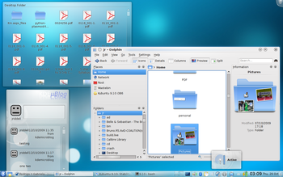

Welcome to Kubuntu 9.10
Kubuntu is built with the latest KDE desktop on top of a solid Ubuntu core. We believe this combination delivers a fantastic all-round home desktop experience. Our selection of tools and applications will provide you with all that you need for most of your tasks, with many more available just a few clicks away! Whether browsing the web, playing your music, composing an e-mail or connecting with your friends on social networks, Kubuntu 9.10 brings you an innovative and attractive platform for all your desktop needs.
Read on for information on how to get Kubuntu and what is new in Karmic.
Installing 9.10
See Graphical Install for help on installing and Installation From USB Stick for help on installing Kubuntu Netbook.
What’s New and Improved Since Kubuntu 9.04
The Karmic Koala brings with it a better integrated and more stable desktop, as well as many new features. There have been updates to many common applications as well as bug fixes to some of those annoyances you may or may not have run into.
9.10 adds a whole new version of Kubuntu especially for Netbooks revealing a user interface more suited to small screens.
KDE 4.3

Our desktop is the cutting edge KDE 4 and this release updates it to another major version. There are many changes including bug fixes, new functionality and more. Some of these changes include, but are not limited to:
For complete details see the KDE 4.3 release announcement.
Netbook Technical Preview

Kubuntu Netbook Edition for 9.10 is the first release for this new Ubuntu variant. It is optimised for netbook systems (usually a 9 or 10 inch display) with a minimum vertical screen resolution of 576 pixels. It is built on the same KDE 4.3 base as Kubuntu, but uses a technical preview version of KDE’s forthcoming Plasma Netbook to provide the basic ‘desktop’ environment. Kubuntu has worked with the Plasma Netbook developers to provide a basic first look at the initial vision from KDE for supporting netbooks.
Kubuntu Netbook Edition 9.10 will be useful for many, but is not for everyone. It provides an early look at the plasma shell that will enable people to interact with standard KDE applications in a way optimised for netbook systems. It is useful, functional, and reliable. It does have a few rough edges, but should be usable by many people without problems.
The complete version of the KDE netbook experience will be released as part of Kubuntu Lucid Lynx (10.04). The current preview is a first effort towards this completed vision for a radically better experience on mobile, low power, net oriented systems.
Installation is done through a USB pen drive. Use ”’USB Startup Disk Creator”’ (available in Kubuntu 9.10, to install in 9.04 or for Windows on the Netbook ISO image) to copy the ISO onto a USB disk for your netbook. You can also install by burning the image to a DVD. More details on Kubuntu Netbook Edition can be found on the Kubuntu Netbook.
Social from the Start

This release has an emphasis on connecting you to your online social networks.
New social features include :
- The KDE Microblogging Plasma widget as part of the default desktop experience for your identi.ca and Twitter fix
- The Google Calendar Plasma widget is available for adding to your desktop
- The Facebook Plasma widget lets you stay up to date with your friends, also available for adding to your desktop
- KDE Image plugins let you connect to Flickr and other photo sites from Gwenview and Digikam
- Choqok is available to install for a full microblogging setup.
- The OpenDesktop Social Plasma widget is ready for your desktop to connect you to your free software neighbours
- The Facebook Kopete plugin so that you can chat with your Facebook contacts from the comfort of the default chat client. This is still at an experimental stage and contains known problems so is available only from universe, let us know how it works on the Feedback page below.
OpenOffice KDE Integration

Written by our very own elite Kubuntu developers, 9.10 introduces KDE 4 integration for OpenOffice. This means that all OpenOffice applications will look at home with the default “Oxygen” KDE theme and use the KDE file dialog for opening and saving documents.
Ayatana Integration & Message Indicator

As part of the Ayatana initiative (and working with KDE upstream), KDE & Gnome desktop now share an official FreeDesktop standard for desktop notifications. The notification bubbles generated by KDE or Gnome applications now appear natively on the other desktop.

A new message indicator has also been added which works with e-mail and chat applications. No need to be distracted by IRC pings, instant message chats or new emails when you do not want to be, but easy to find out who has been leaving messages for you when you want to. The indicator is cross-desktop to allow users to pick their favourite applications and still enjoy a consistent integration with the rest of their desktop environment.
See Configure Indicators for how to set it up.
Installer Beauty

Our installer has a fresh new look thanks to co-ordination with KDE’s Oxygen artwork team. It also includes a visual keyboard layout widget.
Rediscover your Music with Amarok 2

Amarok’s 2.2 release has been added to 9.10. It brings back some features previously missing in Amarok 2 and adds polish & customisation possibilities to the user interface. Check out what’s new from the Amarok site.
Install and Update software with Package Kit

Kubuntu 9.10 includes the latest release of KPackageKit. Key features added since Kubuntu 9.04 are new notifications, sweet animations, a history feature, usability fixes and a more robust overall experience with fewer bugs.
K3b now KDE 4 Compliant

One of the last KDE 3 mainstays of previous releases, K3b, the popular CD and DVD burning application has now been ported to KDE 4.
User Configuration

Everybody’s favourite user management tool from the KDE 3 days has been resurrected for Kubuntu 9.10. Userconfig offers a simple user interface as well as integration with System Settings.
KUser, the application that handled this in the recent past, has been relegated to the DVD, as it still has LDAP tools that might be useful to some.
Network Manager applet
The Network Manager applet has received some loving from its creators and our Ayatana team, offering a more robust networking experience than it did in Kubuntu 9.04.
GTK+ Integration

QtCurve brings a refinement of the Oxygen-like widget style so that your GNOME apps will look more at home in KDE.
GTK+ widget style and fonts can now be configured from KDE.
Firefox Installer

For fans of Firefox, installing this popular web browser will be a piece of cake in Kubuntu 9.10. We have included a simple installer for Firefox that appears where Firefox would normally appear in the “Internet” menu.
KDE 3 Remix
For those who prefer the old KDE 3 desktop a Kubuntu KDE 3 Remix is available.
Kubuntu Specific Known Issues
- The KPackageKit package manager used in Kubuntu 9.10 does not notify users if the packages they are installing come from repositories that are not secured with PGP. Users that wish to be informed of any packages installed from unsigned sources should use the apt-get command line tool as a workaround. (Launchpad bug)
- KNetworkManager cannot connect to a wireless network with a hidden SSID. Install network-manager-gnome via a wired connection as a workaround. (Launchpad bug)
- The “Hardware Drivers” package in Kubuntu (jockey-kde) requires a local package cache to function properly. Immediately after a new installation, this might not exist. If running jockey-kde after installing Kubuntu, first ensure there is a local package cache by running KPackageKit (K-Menu -> System Settings -> Add and Remove Software) and clicking on software updates or in a Konsole shell doing “sudo apt-get update” before running jockey-kde. (Launchpad bug)
- For Kubuntu Netbook Edition, users who wish to run Wubi from a USB disk that has persistent storage enabled will need to run it with the –force-wubi option from the Windows command line. (Launchpad bug)
- When using the OEM installation option on Kubuntu Netbook Edition, no “prepare for shipping” icon is placed on the desktop. Users who are doing OEM installations with Kubuntu Netbook Edition can access this feature under by choosing System->Prepare for shipping … from the main bar. (Launchpad Bug)
Issues applicable to both Kubuntu and Ubuntu can be found on the Ubuntu release notes.
Feedback
We want to hear what you think about Kubuntu 9.10. We want to know if it rocks, if it is just OK, or it is flat out wrong. No matter the feedback, as long as it is in line with the Ubuntu Code of Conduct we would like to hear it.
So what are you waiting for, head on over to the Feedback Page and let us know.
Helping Kubuntu
Are you interesting in helping with the development of Kubuntu? If so, Kubuntu is looking for the following:
- Documentation writers
- Translators
- Bug triagers
- IRC, Mailing Lists, and Forums supporters
- Application packagers
- Application developers
No matter your skillset, Kubuntu has a job waiting for you! Check out the Helping Kubuntu page for more information.
Getting Help
There are a number of places where you can get help for Kubuntu: